成年（外表约 24 岁，实际活了三百年）。拒绝走进王咒的继位者，停住了自己的城和自己三百年。理想：「无王之纪」。击败后触发「时之约」CG，此后每个结局都和主角在一起。
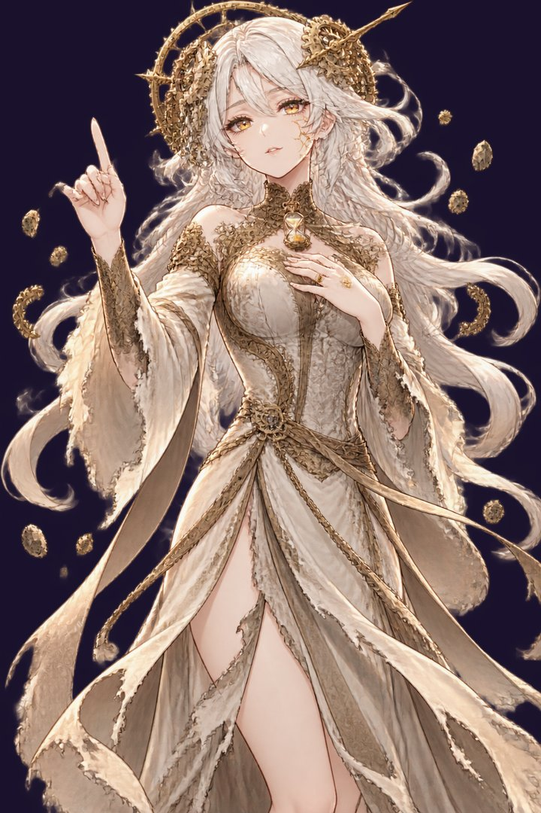
原图（上）· 游戏内立绘（下，底部渐隐）
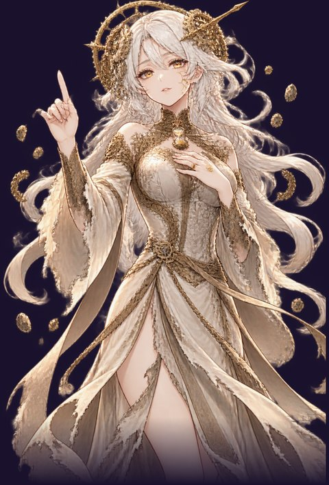
① 钟裂：三百年要一口气还回来，主角按住她的心口，掌心第一次亮起四色之外的光
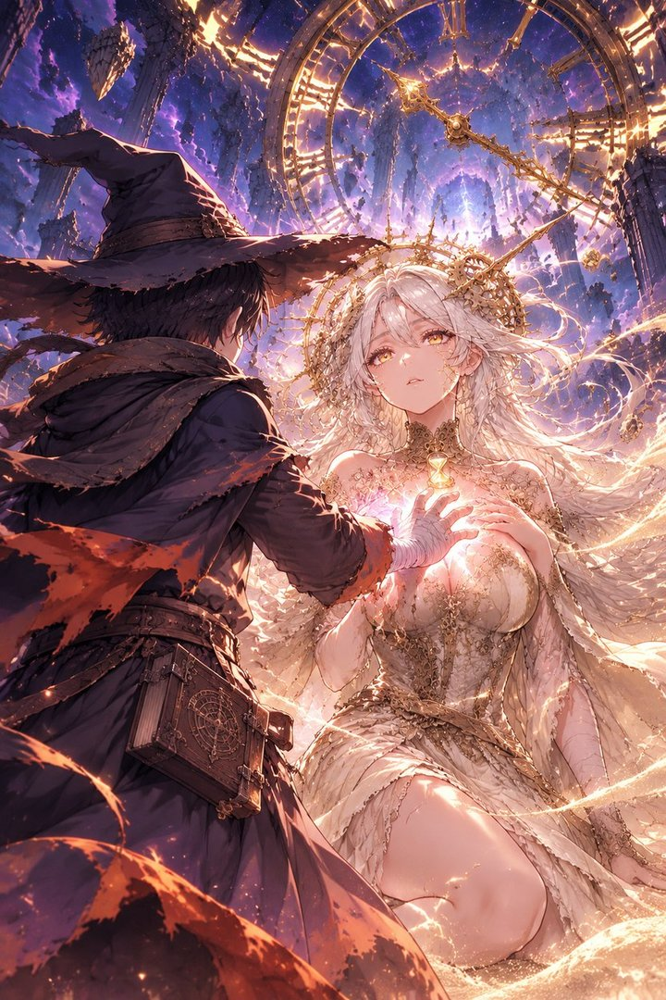
② 时之约：主角为她戴上继位者之戒——「不是做我的王，做那个陪我一起变老的人」
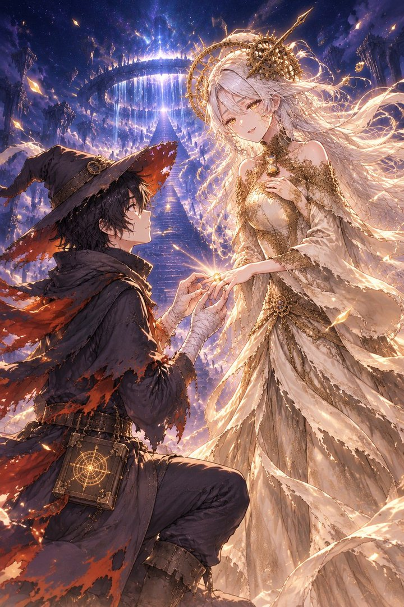
③ 各自的路：「在原初源泉见。这一次，你不会是一个人走到最后。」
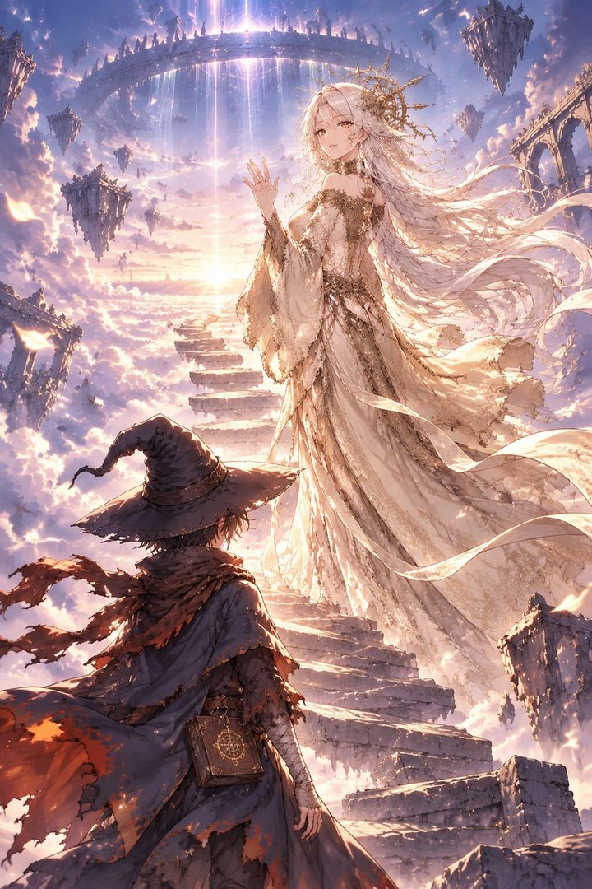
源泉升级：她以额头相抵，把前世的一系魔法还到你手里
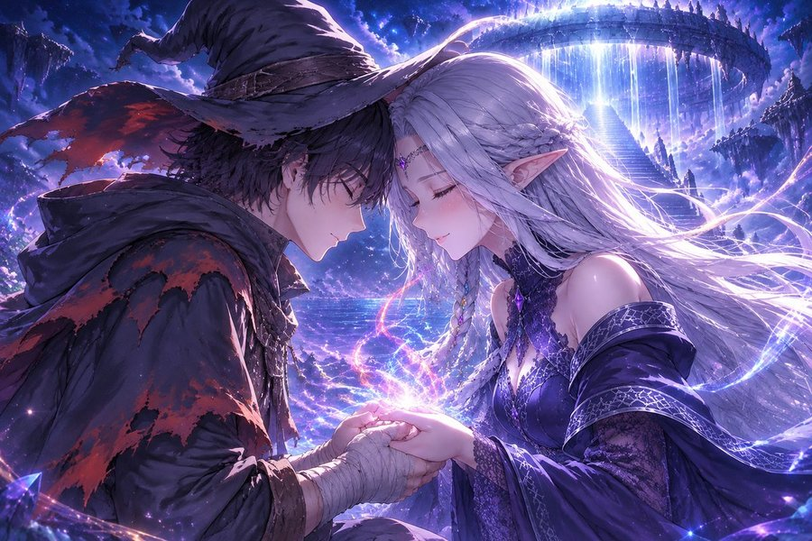
「最后的守泉人」（第 8 关王座，结局选择前）：她循着泉眼来到原初源泉，把一千年的记忆和自己倒进泉底
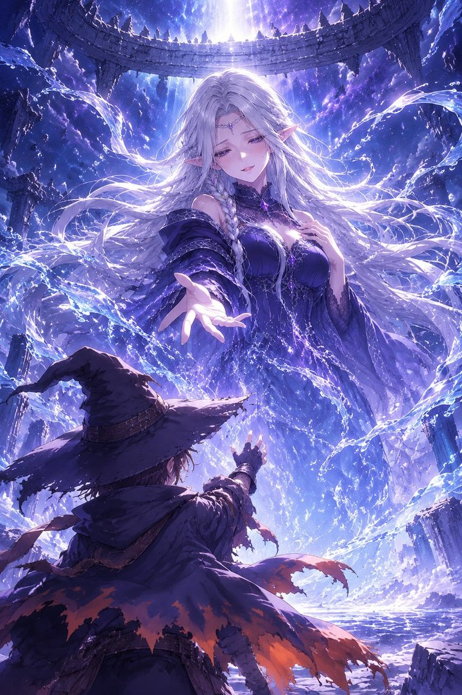
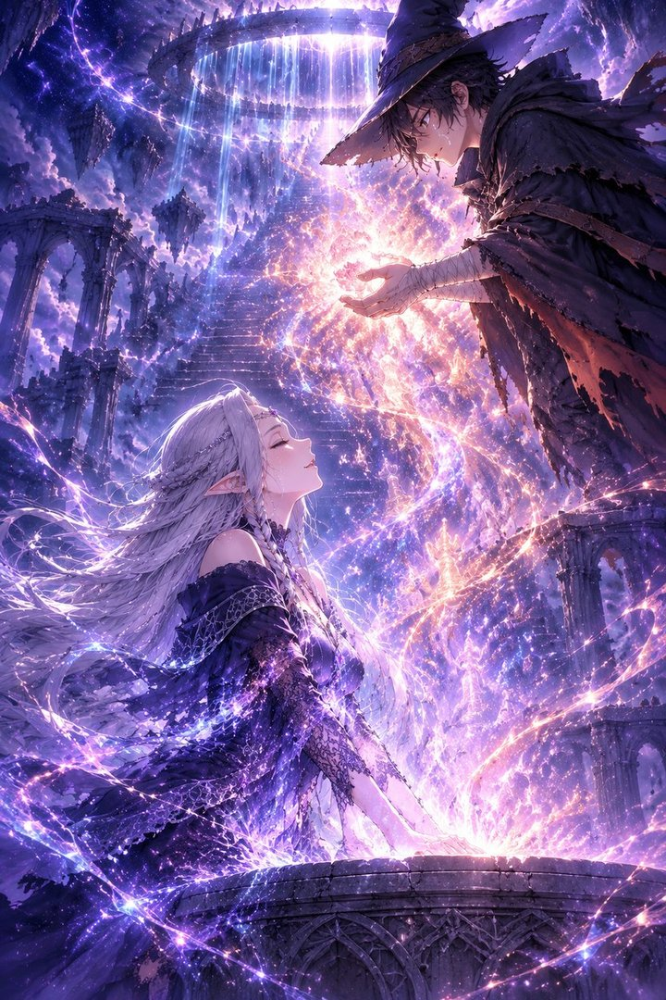
延续世界
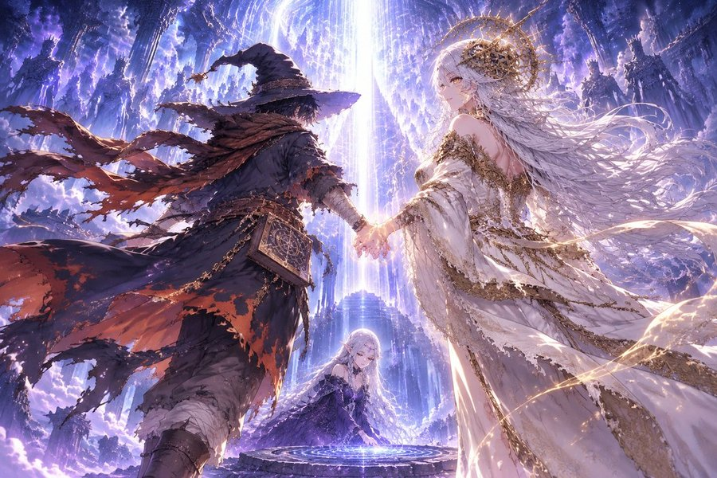
终结魔法
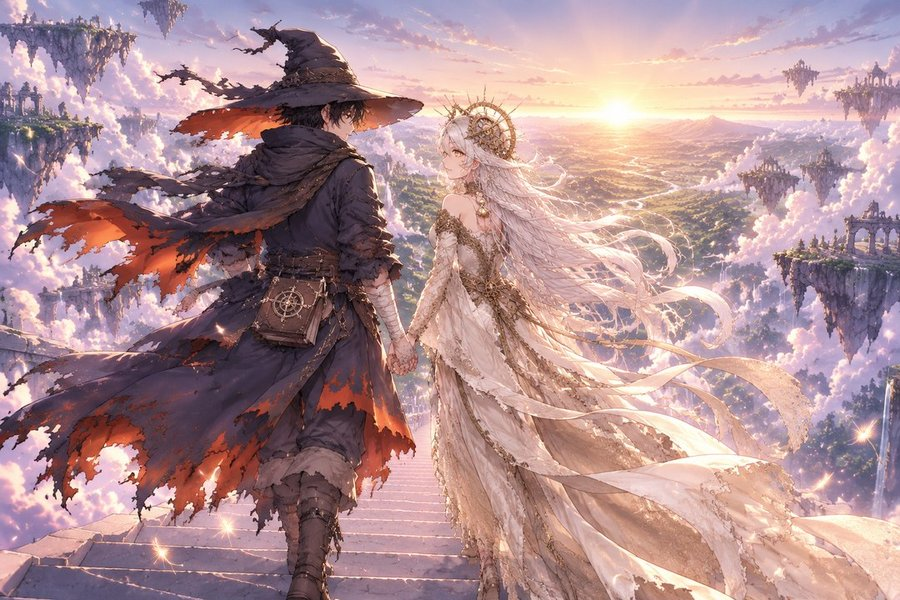
创造新世界（薇丝塔第一次睁开眼睛）
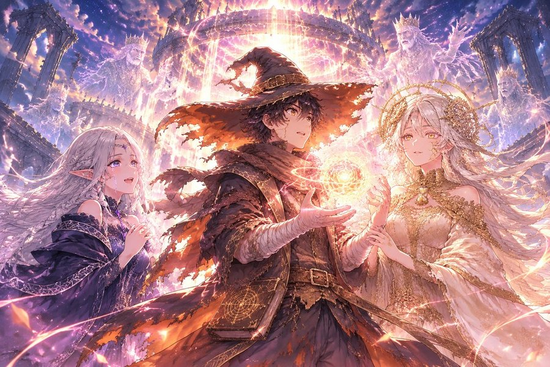